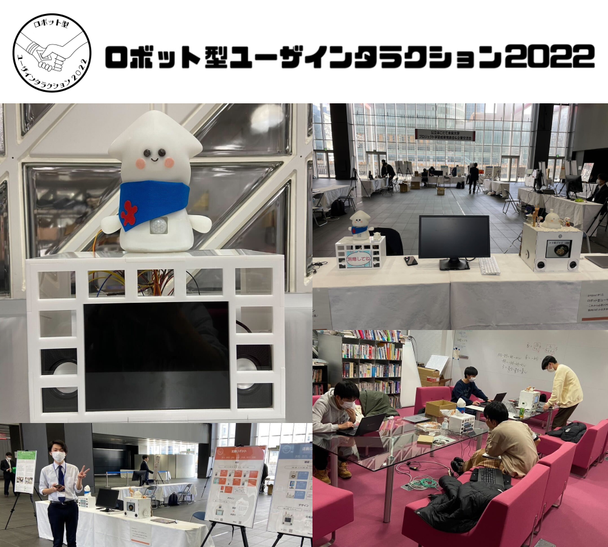

キーワード：組み込み / ロボット / チーム開発
大学3年次にプロジェクト学習という授業を通して、チーム開発を経験。
「ロボットのある生活の基盤を作る」を目的に、未来大玄関に置く挨拶ロボットを開発した。
チームリーダーとして、チーム全体をまとめる役とロボットのバックエンド開発を担当した。
担当
玄関ロボットグループ グループリーダー / ロボットバックエンド開発担当
背景
- 大学3年次のプロジェクト学習で行ったチーム開発
- 現在ロボットが存在しない場所にロボットを設置・運用することで、そこに価値を付加
- ロボットのある生活の基盤を作るを目的
ロボットの提案
-
未来大玄関にロボットを置くことを想定
- 玄関は大学利用者が必ず通るため、運用時のデータが取得しやすい
- 未来大にロボットがあふれる未来が最終目標であり、そのための第一歩になることが望ましい
-
挨拶ロボットを提案
- 今後の基盤となるロボットを作成
- 日常の一部にロボットが溶け込むことが望ましいため、挨拶という日常に着目
-
挨拶ロボットの機能
- 音声はもちろん、目線やジェスチャーによる挨拶
- ディスプレイを用いた、学生にとって重要な情報の提示
- 今後の発展を見据えたスマートフォンアプリケーションとの連携
実装・活動
-
Arduinoを用いたロボット駆動系の構築
- サーボモータによるロボット頭部と手の動作
- 赤外線センサによる人の感知
- 距離センサによる近づく手の感知
-
Raspberry PiとPythonを用いたサーバサイドプログラミング
- ディスプレイへの情報出力
- 音声などのオーディオ出力
- スマートフォンアプリケーションとの連携
- Aruduinoとの連携
頑張った点
- 使用するセンサやサーボモータなどハードウェアの仕様・制約に沿った組み込みプログラミングの大変さを学ぶことができた
- 学内外での発表を行い、自分たちの開発したものを他者にわかりやすく伝える経験を積んだ
-
チームリーダーとして全体をまとめる役に尽力した
- 技術選定や機能選定などでチーム内で意見がまとまらないことが多かった
- 各メンバーの考えなどを丁寧にまとめる・聞き取りする
- 自分が率先して動くことで、信頼を築くことを意識
- デザイン面でもプログラム面でもトライアンドエラーを徹底することで、全員が納得行く形を模索
URL
プロジェクト報告書：https://www.fun.ac.jp/wp-content/uploads/2023/04/project13.pdf
グループ報告書：https://www.fun.ac.jp/wp-content/uploads/2023/04/document13_A.pdf
ポスター：https://www.fun.ac.jp/wp-content/uploads/2023/04/poster13_main.pdf